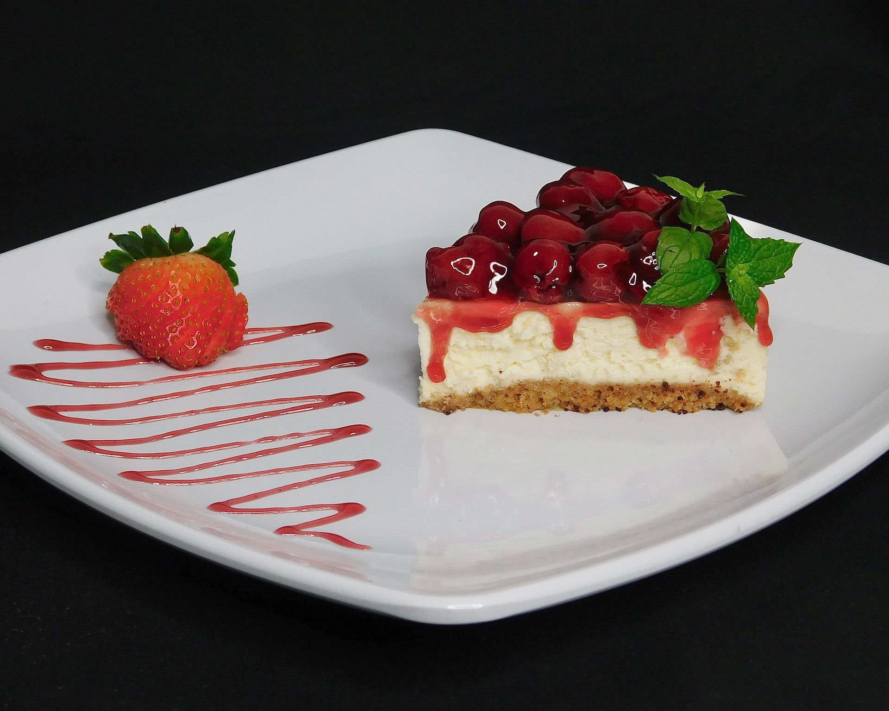

Strawberry Cheesecake

A light and creamy cheesecake topped with sweet strawberry sauce topping. It’s undoubtedly the best cheesecake you’ll ever have. There are quite a few steps but each one is straightforward and easy to follow.
Ingredients
- 250g digestive biscuits
- 100g butter, melted
- 1 vanilla pod
- 600g full fat soft cheese
- 100g icing sugar
- 284ml pot of double cream
Steps
- To make the base, butter and line a 23cm loose-bottomed tin with baking parchment. Put the digestive biscuits in a plastic food bag and crush to crumbs using a rolling pin. Transfer the crumbs to a bowl, then pour over the melted butter. Mix thoroughly until the crumbs are completely coated. Tip them into the prepared tin and press firmly down into the base to create an even layer. Chill in the fridge for 1 hr to set firmly.
- Slice the vanilla pod in half lengthways, leaving the tip intact, so that the two halves are still joined. Holding onto the tip of the pod, scrape out the seeds using the back of a kitchen knife.
- Pour the double cream into a bowl and whisk with an electric mixer until it’s just starting to thicken to soft peaks. Place the soft cheese, icing sugar and the vanilla seeds in a separate bowl, then beat for 2 mins with an electric mixer until smooth and starting to thicken, it will get thin and then start to thicken again. Tip in the double cream and fold it into the soft cheese mix. You’re looking for it to be thickened enough to hold its shape when you tip a spoon of it upside down. If it’s not thick enough, continue to whisk. Spoon onto the biscuit base, starting from the edges and working inwards, making sure that there are no air bubbles. Smooth the top of the cheesecake down with the back of a dessert spoon or spatula. Leave to set in the fridge overnight.
- Bring the cheesecake to room temperature about 30 mins before serving. To remove it from the tin, place the base on top of a can, then gradually pull the sides of the tin down. Slip the cake onto a serving plate, removing the lining paper and base. Purée half the strawberries in a blender or food processor with the icing sugar and 1 tsp water, then sieve. Pile the remaining strawberries onto the cake, and pour the purée over the top.